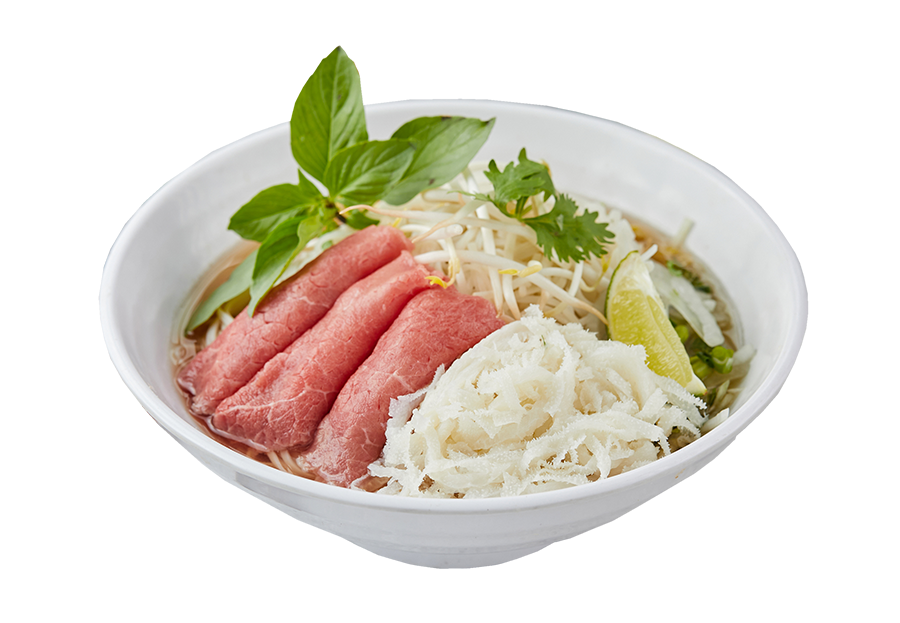

Pho Thai

Description:
Pho is a Vietnamese soup that's made with all the good stuff: broth, noodles, beef (or other protein) and lots of mix-and-match toppings. The best thing about pho is that it's such a restorative food—the comforting soup is savory and rich, while still feeling clean and refreshing at the same time
Ingredients:
- Pho Broth(go here for ingredients)
- Flat rice noodles
- Cooked beef (from the broth)
- Round sirloin, London broil, flank steak or tri tip steak
- Scallions
- Cilantro
- Bean sprouts
- Mint
- Basil
- Chiles
- Lime wedges
Steps:
- Make the broth
- If using dried rice noodles, cover them with hot tap water and let them soak for 15 minutes, or until they are pliable and opaque. Drain in a colander. If using fresh rice noodles, untangle them, place in a colander, and rinse briefly under cold running water.
- Cut the cooked beef across the grain into thin slices. Freeze the raw beef for 15 minutes, then slice it across the grain into very thin slices. Set all beef aside. Ready the raw onion, scallions, cilantro leaves for adding to the bowls. Arrange the garnishes on a plate and put on the table.
- To ensure good timing, bring the broth to a simmer over medium heat as you are assembling the bowls.
- At the same time, fill a separate large pot with water and boil. For each bowl, place a portion of the noodles on a strainer (or mesh sieve) and dunk the noodles in the boiling water for 10 seconds. Immediately pull the strainer from the water, letting the water drain back into the pot. Empty the noodles into a bowl.
- Top each bowl of noodles with cooked and raw beef, arranging the slices flat. Add a bit of raw onion, scallions, cilantro leaves to each bowl.
- The pho broth needs to be boiling hot, to cook the raw beef slices. Raise the heat of the broth to a boil. Do a final taste and make any last minute adjustments with fish sauce and sugar. Ladle about 2 cups of broth into each bowl. Serve immediately with plate of garnishes.
Recipe Credit
Home